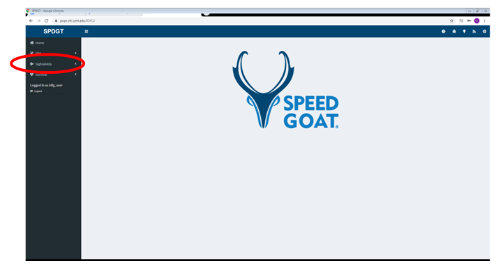
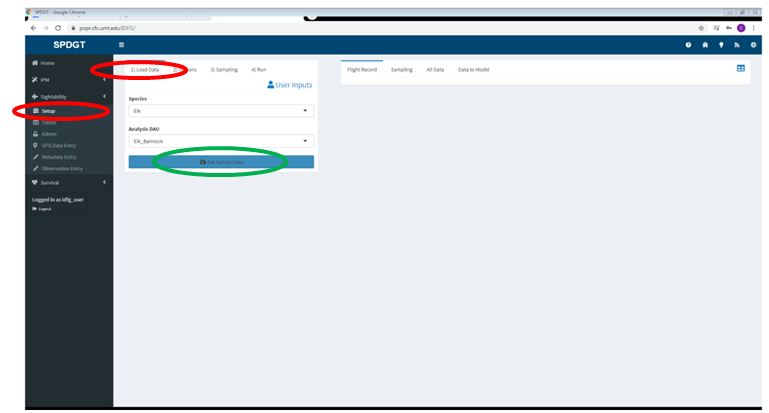
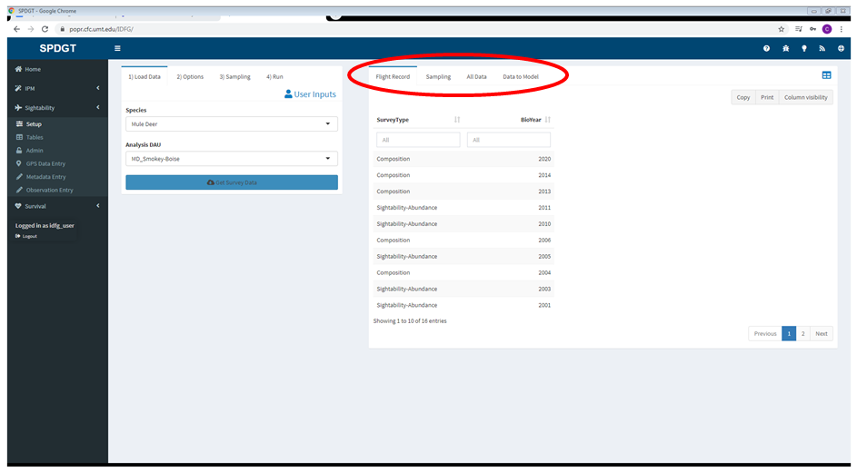
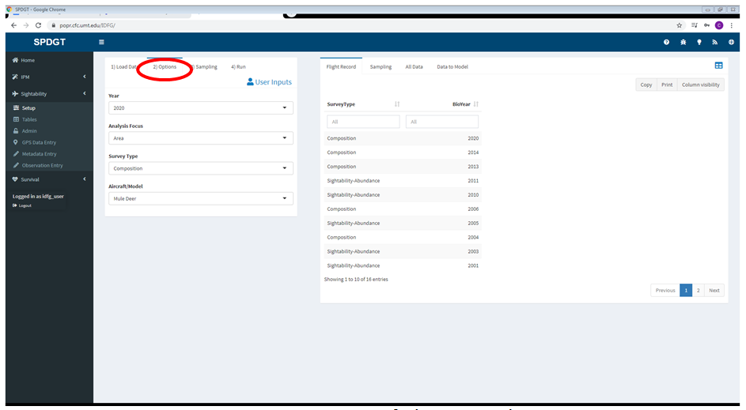
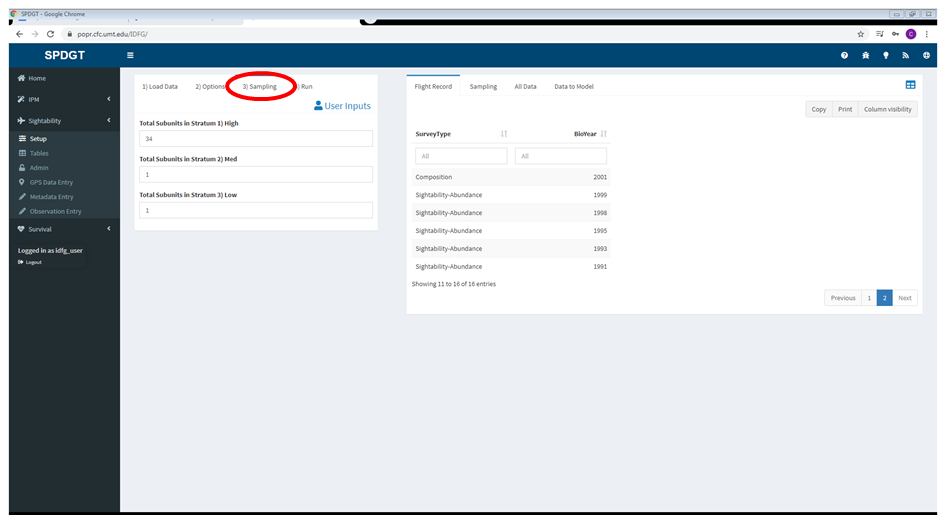
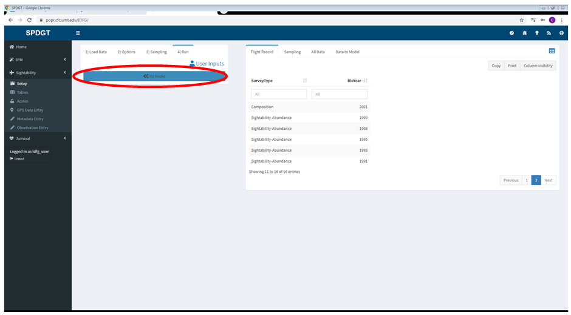
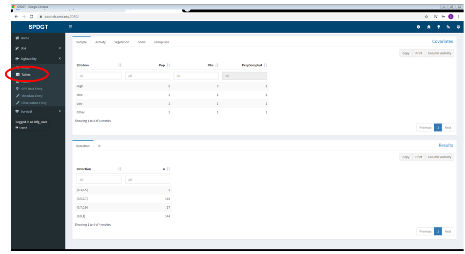
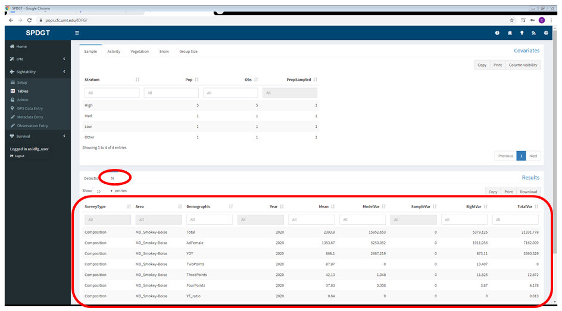
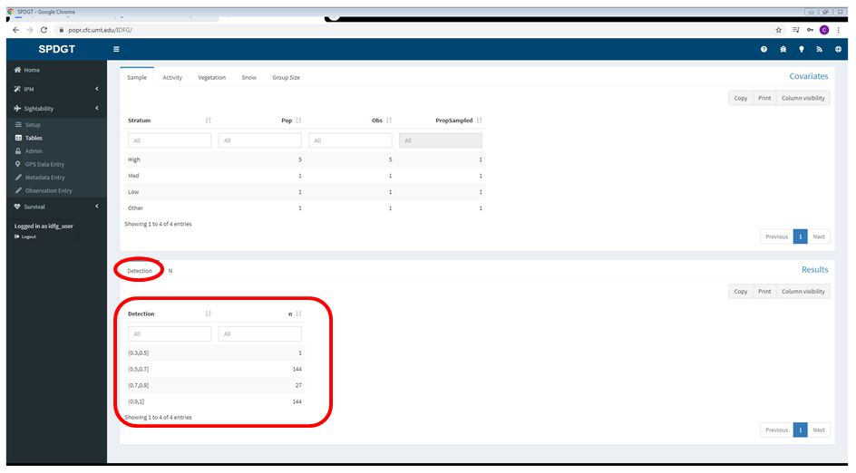

2.3 Step-By-Step Sightability Model Example
This example shows how to run a sightability model for mule deer in the Smokey-Boise DAU step by step, including screenshots of the website.
- Start by clicking Sightability in the sidebar.

Select the Setup page in the sidebar, then select the species and DAU you want to model. In this example we use mule deer and MD_Smokey-Boise. Make sure to select the correct species and DAU before clicking the button to load sightability data.
Click the button labeled “Get Survey Data” to load the data for the species and DAU you selected.

Once the data is loaded you should see a dialog indicating that the process was successful. Click Dismiss. If you receive an error see the errors section.
Review the data in the panes to the right (see Loading Data for details).

- Move on to the Options tab in the User Inputs pane, and make the appropriate selections. In this example we run a model on 2020 composition data for mule deer, with area as the spatial focus of the analysis.

- Move on to the Sampling tab and check that the data are accurate by selecting Sampling in the pane to the right. If the total population of subunits available in each stratum is incorrect you can fix it here.

- Now that you’ve selected the appropriate settings and reviewed the input data, switch to the Run tab and click Fit Model.

- Once model fitting is complete select the Tables page in the sidebar to view the output.

The covariates section on the top half of the page summarizes the observations used in the model and how they fall into the various strata, activity categories, etc. See Model Output for more details.
Select the N table on the bottom half of the screen to view abundance estimates.

- Select the Detection table to view a summary of observations binned by probability of detection.

- If you’re confident in the results and the settings used to run the model, you can add the sightability results to an IPM dataset using the Admin tab in the sidebar. Be sure to read the instructions and understand the difference between the various IPM databases before using the admin tab.